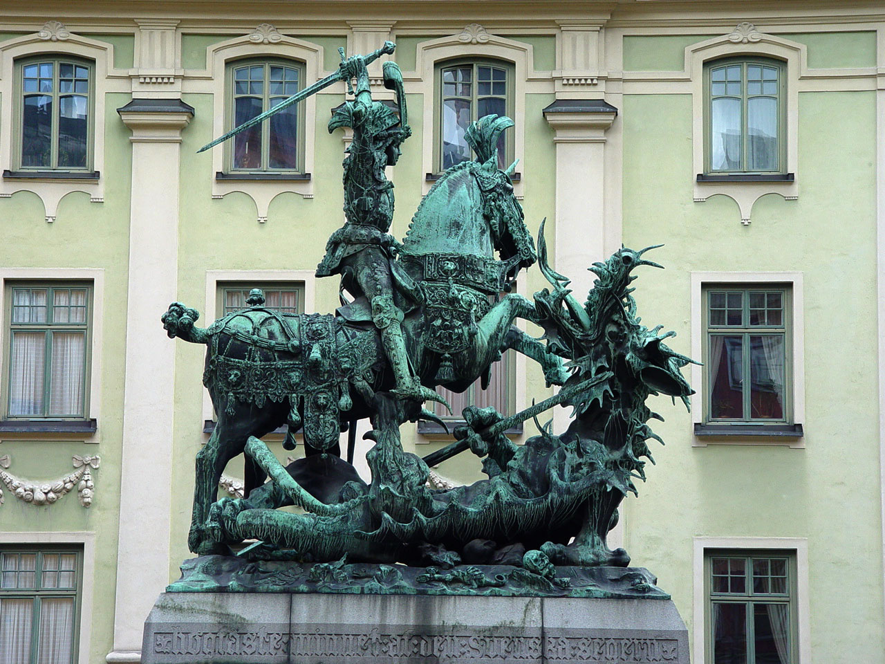

Bête de l'Apocalypse
La Bête de l'Apocalypse, (τὸ Θηρίον (tò thēríon) en grec ancien) est une figure de l'eschatologie chrétienne qui apparait dans le chapitre 13 de l'Apocalypse de Jean, en écho à la Vision des quatre bêtes du Livre de Daniel. L'auteur de l'Apocalypse, qui écrit sous le règne de l'empereur Domitien, décrit successivement deux bêtes affidées à Satan — l'une issue de la mer, l'autre issue de la terre pour seconder la première — qui symbolisent l'oppression du pouvoir romain idolâtre et les moyens qu'il déploie à cette fin.

Saint Georges
Georges de Lydda (vers 275/280 - 23 avril 303), saint Georges, est un martyr du ive siècle, selon la tradition continue de l'Église catholique et des diverses Églises orthodoxes. Il est le saint patron, entre autres, de la chevalerie chrétienne, du royaume d'Angleterre depuis l'an 800, de la Géorgie, du scoutisme et des armuriers. Par ailleurs, de nombreuses localités portent son nom. Selon la tradition chrétienne, il est cousin avec l'isapostole sainte Nino. Il est principalement représenté en chevalier qui terrasse un dragon et fait ainsi figure d'allégorie de la victoire de la foi chrétienne sur le démon ou plus largement du bien sur le mal.
